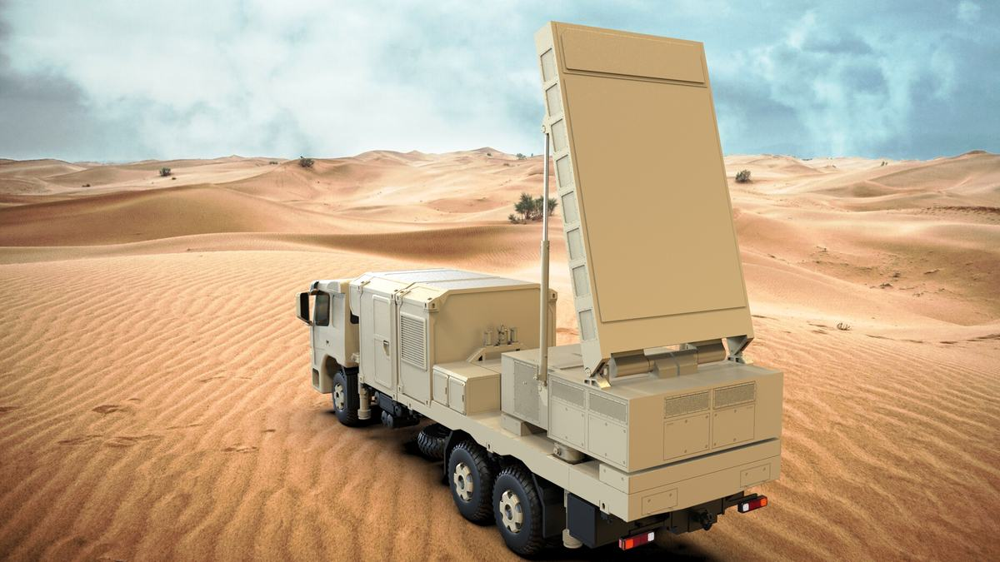
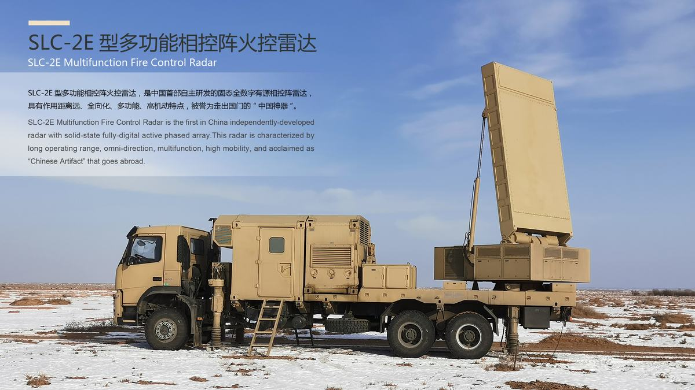
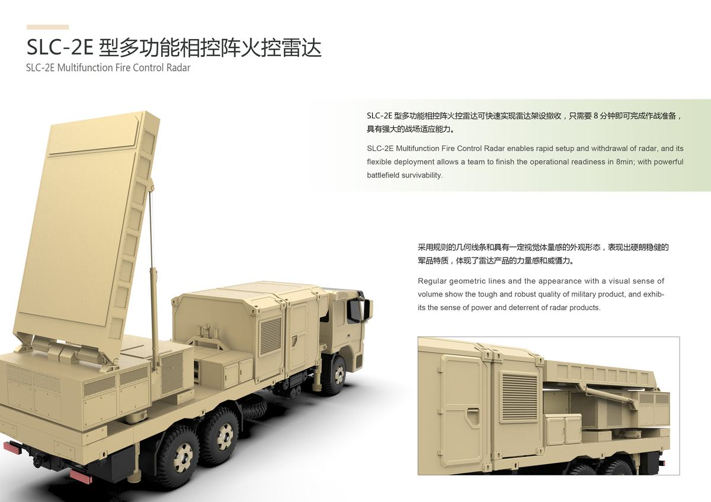

新时期陆军作战，面临全向来袭的地面火炮、武装直升机、无人机、巡航导弹等威胁，需要同时进行全方位弹道目标和空气动力目标探测。SLC-2E型多功能雷达具有作用距离远、全向化、多功能、高机动等特点，高度契合防空、炮位侦察一体化作战需求，军贸市场前景良好。
1）硬朗稳健的军品形象
通过系统整合和形态轮廓辅助线的运用，加强了各单元形态的秩序性，使整车形态更为简洁紧凑；采用规则的几何线条和具有一定视觉体量感的外观形态，表现出硬朗稳健的军品特质，体现了雷达产品的力量感和威慑力。
2）强大的战场适应能力
整机可快速实现雷达架设撤收，部署方式灵活，只需要8分钟即可完成作战准备；满足多种运输方式，机动性高，适合丛林实战和沙漠戈壁作战，具有强大的战场适应能力。
3）全方位的多任务工作能力能
采用最新技术，实现快速目标分类，根据不同距离段、不同目标类型，实时动态调度雷达系统资源，提高系统能量资源利用效率，确保全向方式下同时侦察、校射和目标监视多任务工作能力。
4）社会效益
作为现代反制炮兵压制的重要装备，SLC-2E型多功能雷达具备多任务工作能力，同时可定位跟踪多个目标，通过多场实战考验，受到国外用户的好评和追捧。雷达实物整机参展2016珠海航展，被各大媒体争相报道，并在CCTV-2频道专题节目中重点展示介绍，被誉为走出国门的“中国神器”。
1) 硬朗稳健的军品形象
通过系统整合和形态轮廓辅助线的运用，加强了各单元形态的秩序性，使整车形态更为简洁紧凑；采用规则的几何线条和具有一定视觉体量感的外观形态，表现出硬朗稳健的军品特质，体现了雷达产品的力量感和威慑力。
2）强大的战场适应能力
整机系统可快速实现雷达架设撤收，部署方式灵活，只需要8分钟即可完成作战准备；满足多种运输方式，机动性高，适合丛林实战和沙漠戈壁作战，具有强大的战场适应能力。
3）全方位的多任务工作能力
采用最新技术，实现快速目标分类，根据不同距离段、不同目标类型，实时动态调度雷达系统资源，提高系统能量资源利用效率，确保全向方式下同时侦察、校射和目标监视多任务工作能力。

